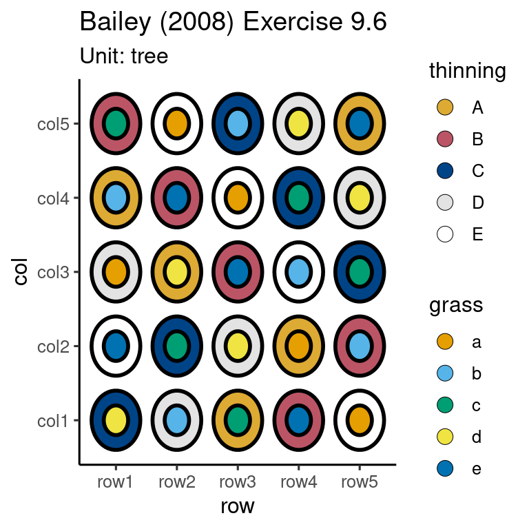

library(edibble)14 Getting started
The experimental planning in this book is supported by the edibble R-package and its extensions. The edibble system is based on the grammar of experimental designs in ?sec-grammar. To get started with using the system, you need to first load the package:
14.1 Setting the experimental structure and context
In the edibble system, an experiment design is built step-by-step. In the first step, you start with initialising the design by using the design() where the user can supply an optional title of the experiment. All subsequent steps are best specified after using the pipe operator (%>%) re-exported from the magrittr package or the native pipe operator (|>) available from R version 4.1 onwards. For example, below we carry out the following steps:
- initiate an experiment called “My first experiment” via
design(); - set 24 pots with
set_units(); and then - set treatments with 3 levels: 2 bacterial strains (PM398 and ZNP1) and no innoculation with
set_trts().
mydesign1 <- design("My first experiment") %>%
set_units(pot = 24) %>%
set_trts(innoculation = c("PM398", "ZNP1", "none"))These steps create and modify a so-called “edibble design” (edbl_design) object that is used to represent an intermediate construct of an experimental design. The arguments in the functions set_units() and set_trts() employ the convention that the left hand side (LHS) is the name of the factor and the input on the right hand side (RHS) defines the levels. If the RHS is a single integer then it’s assumed to be the number of levels and if it’s a vector then it’s the name of the levels.
The print out of this object, as seen below, is displayed like a tree summarising the variables defined thus far.
mydesign1My first experiment
├─pot (24 levels)
└─innoculation (3 levels)If you view the print out in the terminal or console, you will actually see that text are color coded so it’s easier to distinguish between the type of variables (e.g. unit or treatment). The above print out in a terminal will be viewed like below. These colors are customisable as discussed in Section @ref(aes-custom).

The argument names in set_units and set_trts are not fixed, so you could easily change the name of the units or treatment to something more meaningful. Below we have another experiment which has a statistically equivalent experimental structure as the previous experiment (24 units and 3 levels of treatment), but it “reads” as a different experimental context – a typical user will realise that the experimental units are pigs and treatments are diet.
mydesign2 <- design("My second experiment") %>%
set_units(pig = 24) %>%
set_trts(diet = c("high-fat", "low-fat", "standard"))
mydesign2My second experiment
├─pig (24 levels)
└─diet (3 levels)You can define more than one unit factor or treatment factor. For example below, it reads as that there are: 3 pens (named “North”, “Shade” and “Meadow”), 18 pigs, 3 type of diets and 2 types of supplement given at a frequency of either daily or weekly.
design("My experiment with multiple factors") %>%
set_units(pen = c("North", "Shade", "Meadow"),
pig = 18) %>%
set_trts(diet = c("high-fat", "low-fat", "standard"),
supplement = 2,
# frequency of supplements:
frequency = c("daily", "weekly"))My experiment with multiple factors
├─pen (3 levels)
├─pig (18 levels)
├─diet (3 levels)
├─supplement (2 levels)
└─frequency (2 levels)The unit and treatment factors do not need to be defined in one call. The ordering of the functions is commutative where the factor is not dependent directly on another factor.
design("My experiment with multiple factors") %>%
set_units(pen = c("North", "Shade", "Meadow")) %>%
set_trts(diet = c("high-fat", "low-fat", "standard"),
supplement = 2) %>%
# frequency of supplements
set_trts(frequency = c("daily", "weekly")) %>%
set_units(pig = 18) My experiment with multiple factors
├─pen (3 levels)
├─diet (3 levels)
├─supplement (2 levels)
├─frequency (2 levels)
└─pig (18 levels)14.1.1 A viable experimental design
For example below
design("An invalid unit structure") %>%
set_units(pen = 6,
pig = 18) %>%
serve_table()# An invalid unit structure
# An edibble: 0 x 2
# ℹ 2 variables: pen <unit(6)>, pig <unit(18)>14.1.2 Understanding the experimental context
14.1.3 Fitting a variety of mental mode
14.2 Mapping treatment to units
The above code creates an object that represents an intermediate construct of an experimental design. To complete the specification of a minimum experimental design, we still need to specify:
- the mapping of the treatments to units, which is achieved using
allot_trts(), and - how the treatments are actually allocated to units via
assign_trts().
These step may feel redundant in experiments where there is exactly one unit factor and one treatment factor but it’s required for further generalisation to other experimental structures. In addition, it serves to re-enforce the specific actions to the user.
des <- design("My first animal experiment") %>%
set_units(pig = 24) %>%
set_trts(diet = c("high-fat", "low-fat", "standard")) %>%
allot_trts(diet ~ pig) %>%
assign_trts(order = "random", seed = 1) Once a minimum viable experimental design has been specified, then you can generate the experimental design table (or tibble) called edibble by parsing the object to serve_table().
serve_table(des)# My first animal experiment
# An edibble: 24 x 2
pig diet
<unit(24)> <trt(3)>
1 pig1 low-fat
2 pig2 standard
3 pig3 low-fat
4 pig4 standard
5 pig5 low-fat
6 pig6 low-fat
7 pig7 standard
8 pig8 low-fat
9 pig9 high-fat
10 pig10 high-fat
# ℹ 14 more rows14.2.1 Treatment allotment
diet_design <- function(...) {
design("A valid nested design") %>%
set_units(pen = 6,
pig = nested_in(pen, 3)) %>%
set_trts(diet = c("high-fat", "low-fat", "standard")) %>%
allot_trts(...) %>%
assign_trts(order = "systematic") %>%
serve_table()
}
diet_design(diet ~ pig)# A valid nested design
# An edibble: 18 x 3
pen pig diet
<unit(6)> <unit(18)> <trt(3)>
1 pen1 pig1 high-fat
2 pen1 pig2 low-fat
3 pen1 pig3 standard
4 pen2 pig4 high-fat
5 pen2 pig5 low-fat
6 pen2 pig6 standard
7 pen3 pig7 high-fat
8 pen3 pig8 low-fat
9 pen3 pig9 standard
10 pen4 pig10 high-fat
11 pen4 pig11 low-fat
12 pen4 pig12 standard
13 pen5 pig13 high-fat
14 pen5 pig14 low-fat
15 pen5 pig15 standard
16 pen6 pig16 high-fat
17 pen6 pig17 low-fat
18 pen6 pig18 standarddiet_design(diet ~ pen)# A valid nested design
# An edibble: 18 x 3
pen pig diet
<unit(6)> <unit(18)> <trt(3)>
1 pen1 pig1 high-fat
2 pen1 pig2 high-fat
3 pen1 pig3 high-fat
4 pen2 pig4 low-fat
5 pen2 pig5 low-fat
6 pen2 pig6 low-fat
7 pen3 pig7 standard
8 pen3 pig8 standard
9 pen3 pig9 standard
10 pen4 pig10 high-fat
11 pen4 pig11 high-fat
12 pen4 pig12 high-fat
13 pen5 pig13 low-fat
14 pen5 pig14 low-fat
15 pen5 pig15 low-fat
16 pen6 pig16 standard
17 pen6 pig17 standard
18 pen6 pig18 standard14.3 Setting records with expectations
The term “records”, often abbreviated as rcrd in the edibble system, refers to any observational variables, including response variables. Setting records is a way to describe the intent of the observations that you will collect in the experiment. All records must be made on a unit. The primary way to set the record is using set_rcrds() where the LHS is the factor name of the record and the RHS is the unit factor on which the record will be measured. The LHS of the input in set_rcrds() follow the same pattern as set_units() and set_trts() as the LHS is the name of the new factor. In the example below, we are measuring weight and sex of the pig and recording the manager of each pen. In this example there are only 6 pens, therefore there should be only a maximum of 6 managers recorded.
desr <- diet_design(diet ~ pen) %>%
set_rcrds(weight = pig,
sex = pig,
manager = pen)
desr# A valid nested design
# An edibble: 18 x 6
pen pig diet weight sex manager
<unit(6)> <unit(18)> <trt(3)> <rcrd> <rcrd> <rcrd>
1 pen1 pig1 high-fat o o o
2 pen1 pig2 high-fat o o x
3 pen1 pig3 high-fat o o x
4 pen2 pig4 low-fat o o o
5 pen2 pig5 low-fat o o x
6 pen2 pig6 low-fat o o x
7 pen3 pig7 standard o o o
8 pen3 pig8 standard o o x
9 pen3 pig9 standard o o x
10 pen4 pig10 high-fat o o o
11 pen4 pig11 high-fat o o x
12 pen4 pig12 high-fat o o x
13 pen5 pig13 low-fat o o o
14 pen5 pig14 low-fat o o x
15 pen5 pig15 low-fat o o x
16 pen6 pig16 standard o o o
17 pen6 pig17 standard o o x
18 pen6 pig18 standard o o xAnother equivalent way to set the record is using set_rcrds_of(). The format of the input is such that the unit factors are on the LHS and the RHS are character vectors of new record factor names. The reason that names are set as characters is because the factors in the RHS do not yet exist. In contrast, the RHS of the input in set_rcrds() is unquoted because those factors exist. The suffix _of in the function name is purposely chosen to signal that the pattern for the LHS no longer follows that of set_rcrds(), set_trts() and set_units() where the LHS is always a new factor name.
diet_design(diet ~ pen) %>%
set_rcrds_of(pig = c("weight", "sex"),
pen = "manager")You may choose to also set expecations of the record. For example, we assert below that the weight of a grown pig must be a minimum of 15 kg.
desre <- desr %>%
expect_rcrds(weight > 15,
factor(sex, levels = c("F", "M")))You might see that it is good principles to be explicit about the records but you may not feel motivated for such verbose coding. There are downstream benefits for this as explained in Sections @ref(simulate) and @ref(export).
14.4 Simulating records
dat <- desre %>%
simulate_rcrds(weight = sim_normal(~diet + pen + pig, sd = 25) %>%
params("mean",
diet = c("high-fat" = 300,
"low-fat" = 50,
"standard" = 150),
pen = c("pen4" = -270),
pig = rnorm(18)),
manager = sim_form(~pen) %>%
params(pen = sample(rep(c("John", "Mary", "Jane"), 2))),
.seed = 1, .censor = NA)
datggplot(dat, aes(pen, weight, color = diet)) +
geom_point(size = 3) 14.5 Exporting the design
14.6 Aesthetic customisations
The edibble system offers you many levels of aesthetic customisations. These customisation are mostly frivolous and serve as means for users to customise elements visually to their liking. The level of aethetic customisation in the edibble system is probably of little value in the grand aim of constructing an experimental design, but if a user finds the developer’s default choice is not to their liking, at least they have the ability to modify it.
14.7 Visualisation
library(deggust)14.8 Examples
design("Bailey (2008) Exercise 8.5") %>%
set_units(pot = 90,
plant = nested_in(pot, 3),
piece = nested_in(plant, 9)) %>%
set_trts(pottasium = c("q1", "q2", "q3", "q4", "q5"),
nutrition = 3) %>%
allot_trts(pottasium ~ pot,
nutrition ~ piece) %>%
assign_trts() %>%
set_rcrds(plantlets = piece) %>%
serve_table()# Bailey (2008) Exercise 8.5
# An edibble: 2,430 x 6
pot plant piece pottasium nutrition plantlets
<unit(90)> <unit(270)> <unit(2k)> <trt(5)> <trt(3)> <rcrd>
1 pot1 plant1 piece1 q2 nutrition2 o
2 pot1 plant1 piece2 q2 nutrition1 o
3 pot1 plant1 piece3 q2 nutrition3 o
4 pot1 plant1 piece4 q2 nutrition3 o
5 pot1 plant1 piece5 q2 nutrition2 o
6 pot1 plant1 piece6 q2 nutrition3 o
7 pot1 plant1 piece7 q2 nutrition1 o
8 pot1 plant1 piece8 q2 nutrition1 o
9 pot1 plant1 piece9 q2 nutrition2 o
10 pot1 plant2 piece10 q2 nutrition3 o
# ℹ 2,420 more rowsdf <- design("Bailey (2008) Exercise 9.6") %>%
set_trts(thinning = c("A", "B", "C", "D", "E"),
grass = c("a", "b", "c", "d", "e")) %>%
set_units(row = 5,
col = 5,
tree = crossed_by(row, col)) %>%
set_rcrds(apple_weight_total = tree) %>%
allot_table(thinning ~ tree,
grass ~ tree)
anatomy(df)
Summary table of the decomposition for unit & trt (based on adjusted quantities)
Source.unit df1 Source.trt df2 aefficiency eefficiency order
row 4 thinning#grass 4 0.5625 0.5000 2
col 4 thinning#grass 4 0.5625 0.5000 2
tree 16 thinning 4 1.0000 1.0000 1
grass 4 1.0000 1.0000 1
thinning#grass 8 0.2500 0.1000 2
Table of information (partially) aliased with previous sources derived from the same formula
Source df Alias In aefficiency eefficiency order
grass 1 thinning trt 0.6400 0.6400 1
grass 4 ## Information remaining trt 0.6923 0.3600 2
The design is not orthogonalautoplot(df)
df <- design("Tyre test") %>%
set_units(car = 4,
driver = 4,
day = 5,
test_drive = crossed_by(day, car, driver),
#tyre = nested_in(test_drive, 4)
) %>%
set_trts(make = 4) %>%
#set_rcrds(measure = tyre) %>%
allot_table(make ~ test_drive)
anatomy(df)
Summary table of the decomposition for unit & trt
Source.unit df1 Source.trt df2 aefficiency eefficiency order
car 3
driver 3
day 4
test_drive 69 make 3 1.0000 1.0000 1
Residual 66 autoplot(df)
df <- design("Bailey (2008) Example 10.19") %>%
set_trts(wash_temp = 4,
dry_temp = 3) %>%
set_units(washer = 8,
dryer = 6,
sheet = 48) %>%
allot_units(washer ~ sheet,
dryer ~ washer/sheet) %>%
allot_trts(wash_temp ~ washer,
dry_temp ~ dryer) %>%
assign_trts("random") %>%
assign_units("random") %>%
set_rcrds(score = sheet) %>%
serve_table()
anatomy(df)
Summary table of the decomposition for unit & trt
Source.unit df1 Source.trt df2 aefficiency eefficiency order
washer 7 wash_temp 3 1.0000 1.0000 1
Residual 4
dryer 5 dry_temp 2 1.0000 1.0000 1
Residual 3
sheet 35 wash_temp#dry_temp 6 1.0000 1.0000 1
Residual 29 autoplot(df)
df <- design("Bailey (2008) Example 10.20") %>%
set_trts(cultivar = 3,
seeding = c("conventional", "no tillage"),
molybdenum = c("applied", "none")) %>%
set_units(block = 4,
strip = nested_in(block, 3),
half = nested_in(block, 2),
quarter = nested_in(half, 2),
plot = nested_in(block, crossed_by(strip, quarter))) %>%
allot_table(cultivar ~ strip,
seeding ~ half,
molybdenum ~ quarter)
df# Bailey (2008) Example 10.20
# An edibble: 48 x 8
cultivar seeding molybdenum block strip half
<trt(3)> <trt(2)> <trt(2)> <unit(4)> <unit(12)> <unit(8)>
1 cultivar3 conventional none block1 strip1 half1
2 cultivar2 conventional none block1 strip2 half1
3 cultivar1 conventional none block1 strip3 half1
4 cultivar3 conventional applied block1 strip1 half1
5 cultivar2 conventional applied block1 strip2 half1
6 cultivar1 conventional applied block1 strip3 half1
7 cultivar3 no tillage none block1 strip1 half2
8 cultivar2 no tillage none block1 strip2 half2
9 cultivar1 no tillage none block1 strip3 half2
10 cultivar3 no tillage applied block1 strip1 half2
# ℹ 38 more rows
# ℹ 2 more variables: quarter <unit(16)>, plot <unit(48)>anatomy(df)Warning in pstructure.formula(formulae[[1]], keep.order = keep.order, grandMean
= grandMean, : block:half is aliased with previous terms in the formula and has
been removed
Summary table of the decomposition for unit & trt (based on adjusted quantities)
Source.unit df1 Source.trt df2 aefficiency
block 3
half[block] 4 seeding 1 1.0000
Residual 3
strip[block] 8 cultivar 2 1.0000
Residual 6
quarter[block:half] 8 molybdenum 1 1.0000
seeding#molybdenum 1 1.0000
Residual 6
plot[block] 24 cultivar#seeding 2 1.0000
cultivar#molybdenum 2 1.0000
cultivar#seeding#molybdenum 2 1.0000
Residual 18
eefficiency order
1.0000 1
1.0000 1
1.0000 1
1.0000 1
1.0000 1
1.0000 1
1.0000 1
Table of information (partially) aliased with previous sources derived from the same formula
Source df Alias In aefficiency eefficiency order
half[block] 4 half[block] unit 1.0000 1.0000 1
half[block] 0 ## Aliased unit 1.0000 1.0000 1des <- design("Bailey (2008) Exercise 10.5") %>%
set_trts(feed = 4) %>%
set_units(room = 4,
sheep = nested_in(room, 4),
period = 4,
unit = crossed_by(period, sheep)) %>%
allot_table(feed ~ unit)
# anatomy(des)
autoplot(des)
design("Bailey (2008) Exercise 10.6") %>%
set_trts(pesticide = c("diuron", "carbofuran", "chlorpyrifos", "tributyltin chloride",
"phorate", "fonofos"),
concentration = 5) %>%
add_trts(pesticide = "none", concentration = NA) %>%
set_units(petri = 2 * ntrts())# emylyn's design
library(edibble)
des1 <- design("sensory evaluation") %>%
set_units(day = 4,
consumer = nested_in(day, 42)) %>%
set_trts(cover_story = c("yes", "no"),
test_half = c("triangle", "paired"),
test_first = c("triangle/paired", "monadic")) %>%
allot_table(test_half:cover_story ~ day,
test_first ~ consumer,
order = c("systematic", "random"))
library(tidyverse)
des1 %>%
filter(test_half == "triangle") %>%
select(day, consumer) %>%
# do the next design
restart_design("triangle test") %>%
set_units(day, consumer) %>%
allot_units(consumer ~ nested_in(day)) %>%
# finished described relationship - new design variables
edbl_design() %>%
set_units(test = nested_in(consumer, 2),
product = nested_in(test, 3)) %>%
set_trts(spiked = c("1/3", "2/3"),
pattern = c("XXO", "XOX", "OXX")) %>%
allot_table(spiked ~ test,
pattern ~ product)